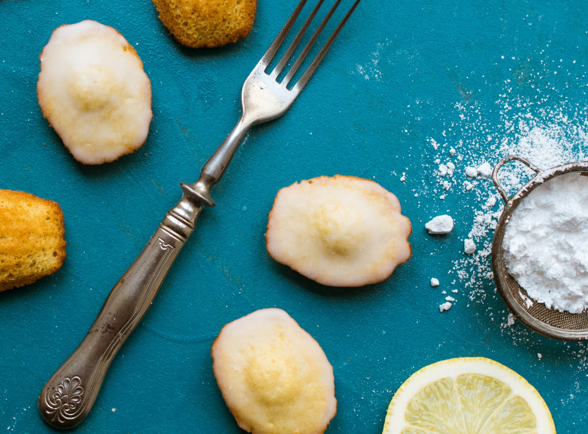

- 스콘
- 마들렌
- 쿠키
레몬 마들렌

박력분 150그램
레몬제스트 1개 분량
녹인 버터 150g
베이킹파우더 3g
소금 2그램
계란 3개
설탕 120g
레몬즙 1tbsp (15ml)
- 녹인 버터에 레몬제스트를 넣는다.
- 계란 3개에 설탕과 소금을 넣고 4~5분간 고속믹싱을 하다 30초정도 저속믹싱을 한.
- 박력분을 체쳐서 넣는다.
- 레몬즙을 1tbsp 넣는다.
- 주걱으로 조심스럽게 저어준 후 녹인 버터에 반죽을 일부 넣어 섞어준 후 남은 반죽과 재빨리 섞는다.
- 160~170도에서 15~18분 굽는다.